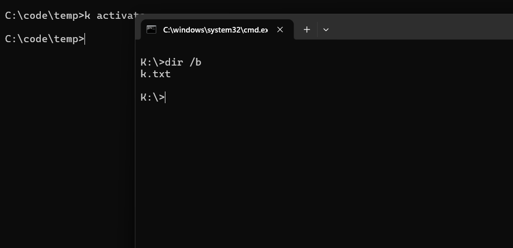
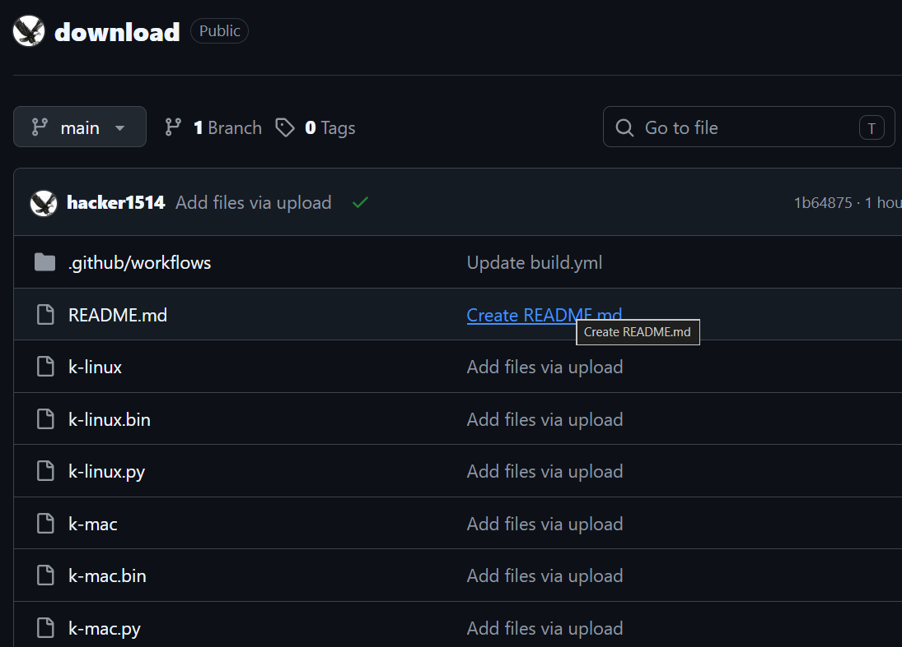
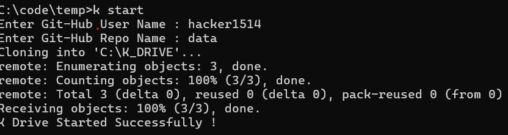
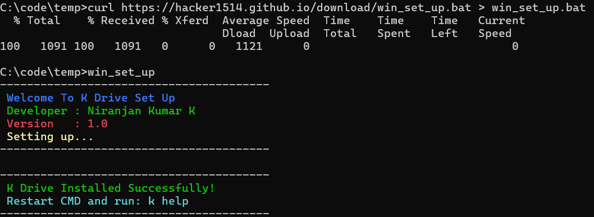
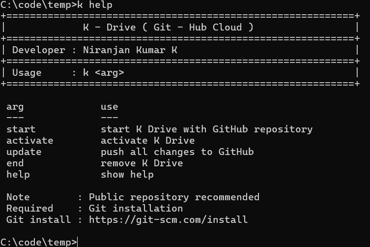

Virtual Workspace
Mount repositories as local drives for intuitive file management.
Your GitHub Repository as a Virtual Drive.
A lightweight command-line utility that connects your GitHub repository as a local virtual workspace — edit files naturally, commit changes, and push back seamlessly.
Transform any GitHub repository into a seamless local workspace with automatic synchronization.
K-Drive is a command-line utility that allows users to connect a GitHub repository as a local workspace. Instead of managing complex Git workflows manually, K-Drive provides a virtual drive experience — mount your repository, work on files with your favorite tools, and let K-Drive handle synchronization in the background.
Everything you need to turn GitHub repos into productive workspaces.
Mount repositories as local drives for intuitive file management.
Seamlessly connect to public and private GitHub repositories.
Automatic sync keeps your local workspace up to date.
Runs on Windows, Linux, macOS, and Termux (Android).
Minimal commands for maximum productivity.
Free, transparent, and community-driven development.
Minimal footprint with no unnecessary dependencies.
Stay current with the latest features and fixes.
Get started in seconds with simple setup commands.
Safe handling of credentials and repository access.
From repository to virtual drive in seven simple steps.
Set up a GitHub repository for your project.
Run k start to initialize the utility.
K-Drive clones your repo to a local workspace.
Edit files using any application you prefer.
Stage and commit your work locally.
Run k update to sync changes upstream.
Your changes are available on any device.
K-Drive runs wherever you develop.
Choose your platform and run the commands below.
Download the Windows installer, then run:
curl https://hacker1514.github.io/download/win_set_up.bat > win_set_up.batwin_set_upDownload the Linux installer, then run:
curl https://hacker1514.github.io/download/linux_set_up.sh > linux_set_up.shchmod +x linux_set_up.sh./linux_set_up.shDownload the mac OS installer, then run:
curl https://hacker1514.github.io/download/mac_set_up.sh > mac_set_up.sh chmod +x mac_set_up.sh./mac_set_up.shDownload the Termux installer, then run:
curl https://hacker1514.github.io/download/termux_set_up.sh > termux_set_up.sh chmod +x termux_set_up.sh./termux_set_up.shAll K-Drive CLI commands at a glance.
| Command | Description | Action |
|---|---|---|
k start |
Start K-Drive and initialize the virtual workspace. | |
k activate |
Open the project workspace and mount the virtual drive. | |
k update |
Push local changes to GitHub. | |
k end |
Disconnect K-Drive and unmount the workspace. | |
k help |
Display help information and available commands. |
No commands match your search.
See K-Drive in action.





How K-Drive connects GitHub to your local environment.
K-Drive uses a GitHub Personal Access Token (Classic) for secure access to your repositories.
Go to:
Profile → Settings → Developer settings
Select:
Personal access tokens → Tokens (classic)
Click
Generate new token (classic)
✔ Note: K Drive
✔ Scope: repo
GitHub shows the token only once. Copy it and keep it safe.
GitHub Username : hacker1514
GitHub PAT : ghp_xxxxxxxxxxxxx
Never share your Personal Access Token.
K-Drive stores it locally so you don't have to enter it again for every
git push.
The tools and technologies powering K-Drive.
What's coming next for K-Drive.
Graphical interface for non-CLI users.
Browse and manage multiple repositories.
End-to-end encryption for sensitive projects.
Extended cloud storage integration.
Mount and manage several repos simultaneously.
Scheduled backups to prevent data loss.
Extend K-Drive with community plugins.
Encrypt virtual drive contents at rest.
Visual file tree and history browser.
K-Drive is a command-line utility that connects a GitHub repository as a local virtual workspace, allowing you to edit files and sync changes automatically.
Yes. K-Drive supports both public and private GitHub repositories when authenticated with your GitHub credentials or personal access token.
Yes. K-Drive uses Git internally for cloning, committing, and pushing changes. Git must be installed on your system.
K-Drive runs on Windows, Linux, macOS, and Termux (Android).
Absolutely. K-Drive is 100% free and open source under the MIT license.
After editing files locally, run k update to commit and push your changes back to GitHub.

Software Developer
Passionate software developer with interests in operating systems, programming languages, developer tools, automation, cloud technologies, artificial intelligence, and open-source software. Creator of K-Drive and multiple developer-focused projects with an emphasis on performance, simplicity, and cross-platform compatibility.
Get in touch with Niranjan Kumar K.